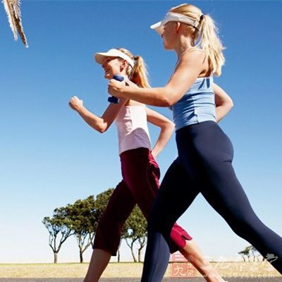

每天总能量 - 每天消耗能量 = 每天剩余能量 #
-
每天剩余能量 为负数那么你今天减脂有效果
-
每天剩余能量 如果为正数那么不好意思你不仅没瘦下来反正还胖了
-
每天剩余能量 如果为0则不偏不倚
消耗的能量的方式有哪些呢? #
- 1:减少摄入能量
早上吃好，午饭吃饱，晚饭吃少
可以的话晚饭尽量吃一碗饭，再加一个水果,再加上一定的运动
- 2:增加运动量
减肥运动方式 #
8个最好的减肥运动方法
-
- 快走/步行/走路

快走是减肥的最佳方法之一，因为对于初学者新手小白来说，这是最方便又轻松的方法，如果你对健身一点儿都不懂，不会感到不知所措，更不用购买设备。不过，这是一种对减肥影响较小的运动，对关节造成的压力没有跑步大。
据哈佛健康统计，一个70公斤的人每步行30分钟，可以燃烧167卡路里的热量（6.4公里/小时的速度，即中速稳健的步伐5）。
一项针对20位肥胖女性的12周研究发现，每周快走步行50-70分钟，每周3次，可以使体内脂肪率减少1.5％，腰围平均减少2.8厘米。
如果你是新手小白，可以把步行轻松融入您的日常活动中。要想在一天中增加步数，可以在午餐后时间散步，不坐电梯，趴公司楼梯，或带狗散步。具体来说，你的目标是每周步行3至4次，每次30分钟，然后可以随着身体的适应能力逐渐增加，以增加步行的时间或频率。
总结：对于初学者来说，快走或步行是一项不错的运动，可以在任何地方进行，不需要设备，并且对关节的压力很小。建议在日常活动中增加步行或快走，能不坐车就不坐车，能不坐电梯就不坐电梯，爬楼梯。不过减肥效果与其他训练方式相比，是最差的。
-
- 慢跑或跑步

慢跑和跑步也是一个不错的训练方式，虽然不是最高效的减肥训练方式，但是，作为健身新手和初学者，甚至很少运动的人，可以帮助你在开始的1-2周内减肥减脂。
慢跑和跑步尽管看上去很相似，但主要的区别在于：慢跑的速度通常在6.4-9.7公里/小时之间，而跑步的速度一般是快于9.7公里/小时的。
据哈佛大学健康学院（Harvard Health）统计，如果以8公里/小时的速度慢跑，一个70公斤的人，每30分钟会燃烧约298卡路里的热量，如果以9.7公里/小时的速度，每30分钟会燃烧372卡路里的热量。
此外研究还发现，慢跑或跑步可以帮助燃烧有害的内脏脂肪，通常称为腹部脂肪。这种类型的脂肪会包裹在你的内部器官周围，并会导致各种慢性疾病（例如心脏病和糖尿病）产生的风险。
慢跑和跑步可以在任何地方进行，并且很容易融入到您的日常活动中。所以，如果你想开始跑步的话，可以定目标为每周跑3-4次，每次慢跑20–30分钟。当然了，这是最好的状态，但是，大可不必追求完美，每次跑3分钟，每周跑3次，也是可以的，做了总比不做强。培养习惯是关键，而不是在于运动多少，只要每次运动哪怕一分钟，你也是胜利了。长期保持，每天坚持比每次运动量更重要。别忘了，完美是拖延症的元凶。如果你有膝盖不适，膝关节酸痛，也许在户外跑步不是最佳的选择，可以在草地等较软的地面上跑步或慢跑。此外，许多跑步机都具有内置缓冲功能，这会让你的膝关节更容易适应。
总结：慢跑和跑步是减肥减重的训练方式之一，很容易融入你每天的日常生活中，虽然不是最高效的减肥训练方式，但是也可以帮助燃烧腹部脂肪。
- 3.骑车或动感单车

动感单车或骑车是一种流行的运动方式，可以改善你的健康状况并帮你减肥。尽管传统上在户外骑自行车，但许多体育馆和健身中心都有固定自行车，以及动感单车，可在室内骑自行车。
哈佛大学健康学院（Harvard Health）估计，一个70公斤的人以中等速度（19–22.4 km / h）骑固定自行车，每30分钟燃烧约260卡路里热量。
骑车不仅可以减肥，而且研究发现，与那些不定期骑自行车的人相比，经常骑自行车的人具有更好的整体健康状况，更高的胰岛素敏感性以及更低的心脏病、癌症和死亡风险。
从初学者到专业运动员，骑自行车对各种健康水平的人都非常有用。而且，这是一种非负重，低冲击的运动，因此不会对关节造成太大的压力。但是，当然低冲击也就意味着，骑单车的减肥效果没有下面要提到的负重训练（力量训练）好。
总结：骑自行车对所有健康水平的人都非常有用，可以在户外骑自行车或在室内骑固定动感单车。它与多种健康益处相关，包括提高胰岛素敏感性和降低某些慢性疾病的风险。但是，减肥效果没有负重训练好。
-
- 负重训练（力量训练，无氧训练，抗阻训练，举铁）

负重训练是希望减肥的人最好的选择。根据哈佛健康统计，每进行一次30分钟的负重训练或力量训练，一个70公斤的人燃烧大约112卡路里的热量。
此外，负重训练还可以帮助您增强力量并促进肌肉生长，加速燃脂，从而提高你的静息代谢率（RMR），也就是说，增加你的身体在静止时燃烧的卡路里热量。一项为期6个月的研究表明，每周进行3次负重训练，每次只需11分钟，就可使代谢率提高平均7.4％，相当于每天坐着不动就可以多燃烧125卡路里的热量。另一项研究发现，进行24周的负重训练，可以使男性的新陈代谢率提高9％，相当于每天多燃烧140卡路里热量。女性的新陈代谢率可增加近4％，相当于每天即便不运动，也可以多燃烧50卡路里的热量。此外，大量研究还表明，与有氧运动相比，在进行负重训练后数小时，您的身体内仍继续在燃烧卡路里，就算是睡觉，看电视，看手机，躺着不动，身体内部也在告诉燃烧热量中。
总结：负重训练可以在训练时和训练后，通过身体内部加速燃烧卡路里来帮助您减肥减重。此外，负重训练还可以帮助你增加肌肉，从而提高你的静息代谢率，即增加身体在静止时燃烧的卡路里热量。
-
- 无氧间歇训练/HIIT/高强度间歇训练

无氧间歇训练，通常称为高强度间歇训练或HIIT，其实这是一个广义术语，是指短暂剧烈的运动与休息交替的训练方式。通常，无氧间歇HIIT训练持续3–30分钟，并且会燃烧大量卡路里热量。
在针对9位经常健身的男性的一项研究发现，做HIIT训练，每分钟燃烧的卡路里比其他类型的锻炼（包括负重训练，骑自行车和在跑步机上跑步）多消耗25–30％。这意味着HIIT可以帮助你燃烧更多的卡路里，同时减少运动时间。
但是，这种训练方式不能持续太长时间，如果真的尽自己最大努力完成，一般10分钟就已经是极限了，如果能做30分钟以上，说明并没有努力做。所以，消耗的总体热量还是没有负重训练高（负重训练的减肥效果是最好的），非常适合想做一些运动，但是实在没时间的人。
用这种方式来减肥减脂，还是比有氧运动要高效。此外，大量研究表明，HIIT在燃烧腹部脂肪方面特别有效，而腹部脂肪与许多慢性疾病有关。最重要的是，HIIT很容易融入您每天的当中去。
你需要做的只是选择一种运动类型，例如俯卧撑，跑步，跳跃或骑自行车或负重训练，以及设定好运动和休息的交替时间，如选择训练30秒，休息30秒等。例如，以最快速度骑单车30秒，然后以慢速骑车30秒，重复重复10分钟。
总结：无氧间歇训练是一种有效的减肥策略，可适用于许多不同类型的训练，包括跑步，跳跃，骑自行车等。在你的日常活动中加入无氧间歇训练，可以帮助你在更少的时间内燃烧更多的卡路里。不过总体减肥效果，还是没有负重训练好。
-
- 游泳

游泳是减肥和保持体形的一种很好方式。据哈佛大学健康学院（Harvard Health）估计，一个70公斤的人游泳半小时，燃烧约233卡路里的热量。
您的游泳方式会决定您燃烧多少卡路里。比如，每30分钟，一个70公斤的人在仰泳时，可以燃烧298卡路里，在蛙泳时燃烧372卡路里，在蝶泳时燃烧409卡路里，自由泳时消耗372卡路里。
一项针对24名中年妇女的12周研究发现，每周游泳3次，每次60分钟，可显着减少体内脂肪，提高柔韧性，并减少多种心脏病的危险因素，包括高总胆固醇和血液甘油三酸酯。
游泳的另一个优点是：对身体的冲击力小，这意味着您的关节更轻松。对于受伤或有关节疼痛的人来说，这是一个很好的选择。不过，正是由于对身体的冲击力小，游泳属于有氧运动，减肥减脂效果没有负重训练好。
总结：对于希望减肥的人来说，游泳是一种效率较低的运动。不过，它可以帮助您提高身体灵活性，并减少各种疾病的风险因素。
-
- 瑜伽

瑜伽是缓解压力的一种流行方法。虽然瑜伽通常不被认为是一种减肥运动，但它可以燃烧一定量的卡路里（看你做瑜伽的强度），并有许多其他健康益处，可帮助减肥。
据哈佛大学健康学院（Harvard Health）估计，每练习30分钟瑜伽，一个70公斤的人可燃烧大约149卡路里的热量。一个对60位肥胖女性进行的为期12周的研究发现，与对照组相比，每周参加两次90分钟的瑜伽课程，她们的腰围平均减少了3.8厘米。此外，瑜伽小组被试人的身心压力健康得到了改善。
除了燃烧卡路里外，研究还表明，瑜伽可以教人正念，帮助理性控制思维，可以帮助你抵抗不健康的食物，控制暴饮暴食，并更好地了解身体的饥饿信号。
瑜伽课全城皆是，而且您可以在任何地方练习瑜伽，包括在家中舒适的环境，以及线上有很多指导教程和瑜伽app。
总结：瑜伽是一项低强度的减肥运动，几乎可以在任何地方进行。不仅燃烧卡路里，还教会您正念和自控力，以帮助您抵抗食物的渴望。
-
- 普拉提

普拉提是一项针对新手和初学者的运动，可以帮助您在一定程度上减轻体重。
根据美国运动委员会赞助的一项研究发现，一个体重64公斤的人在初学普拉提课上，30分钟可以燃烧108卡路里的热量。不过，进行负重训练等高级训练运动会燃烧168卡路里。
尽管普拉提可能不会像跑步等有氧运动那样燃烧掉更多卡路里，但许多人发现它很有趣不枯燥，可能坚持起来比跑步会更容易。
一项针对37名中年女性的为期8周的研究发现，与同期未进行运动的女性对照组相比，每周进行3次普拉提运动，每次运动90分钟，可明显减少腰部、腹部和臀部的围度。
除了减肥以外，普拉提还可减轻腰痛，并改善您的力量、平衡、柔韧性、耐力和整体健康水平。
您可以在家做普拉提运动或去专门提供普拉提课程的专业健身房。而且为了进一步增加普拉提的减肥效果，可以将其与健康的饮食习惯或其他形式的训练相结合，例如负重训练，减肥效果会更好。
总结：普拉提是一种初学者运动，可以帮助您减轻体重，同时改善身体其他方面的力量，以及平衡性、柔韧性和耐力。